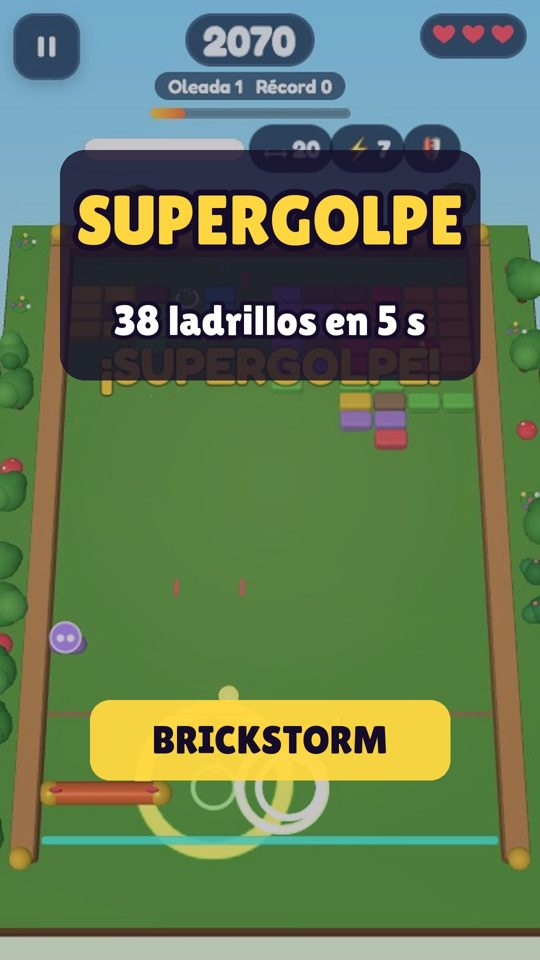

Create short vertical videos and publish them to your own accounts
ViralClip is a video creation and publishing tool for creators. It turns a script, a game recording or a news story into a finished 9:16 video with captions, music and a cover, and publishes it to the creator's own TikTok, Instagram and YouTube accounts.
How it worksTikTok integration
Features
Everything a small creator team needs to go from an idea to a published short, in one place.
Story videos
Scripts become narrated stories with images, two voices, captions word by word and music chosen for the mood.
Game clips
Records real gameplay of browser games in vertical format and edits it into challenge and highlight clips.
News shorts
Verified news told as a short story with official images, flags, counters and quote cards.
Quality checks
Every video is checked before publishing: loudness, safe area for each app, first-frame hook, cover and description.
Scheduling
The same video goes out at the same time on every network, with a title, description and hashtags written for each one.
Analytics
Views, retention and saves are collected from the creator's own accounts to learn which formats work best.
How it works
ViralClip runs on the creator's computer. The creator reviews every video before it goes out.
Create
Write or pick a script, record a game session or choose a news story. ViralClip builds the video: shots, captions, voice, music and cover.
Review
The creator watches the result, edits the title and description, and approves it. Nothing is published without approval.
Connect the account
The creator signs in with TikTok (Login Kit) and authorizes ViralClip for their own account. Instagram and YouTube use their official sign-in as well.
Publish
The video is uploaded to the creator's account: as a draft in the TikTok inbox to finish in the app, or posted directly with the caption and privacy level the creator selected.
Measure
After 48 hours and 7 days, ViralClip reads the video's statistics from the creator's account and shows what worked.
Examples
Covers of videos made with ViralClip for our own channels.


TikTok integration
ViralClip uses TikTok for Developers only to publish the creator's own videos to the creator's own account.
| Product / scope | What ViralClip does with it |
|---|---|
| Login Kit · user.info.basic | Shows which TikTok account is connected (display name and avatar) so the creator knows where the video will go. |
| Content Posting API · video.upload | Sends the finished video to the creator's TikTok inbox as a draft, to edit and post from the TikTok app. |
| Content Posting API · video.publish | Posts the video directly to the creator's profile with the caption and privacy level chosen in ViralClip. |
Access can be removed at any time from the TikTok app: Settings and privacy › Security › Manage app permissions. Read the Privacy Policy and the Terms of Service.
FAQ
Who uses ViralClip?
ViralClip is used by its author and team to run their own channels: Las Otras Noches (stories), NoviralClip (news) and FizzPlays (browser games).
Does ViralClip post anything without my approval?
No. Each video is reviewed and approved before it is uploaded or scheduled.
What data does ViralClip keep?
Only what is needed to publish and measure: the access token of the connected account and the statistics of the videos it published. See the Privacy Policy.
Does ViralClip use YouTube API Services?
Yes, to upload videos to the author's own YouTube channels. See the YouTube Terms of Service and the Google Privacy Policy, linked in our Privacy Policy.
Contact
Questions about ViralClip, the data it uses or a takedown request: lluismayans83@gmail.com.